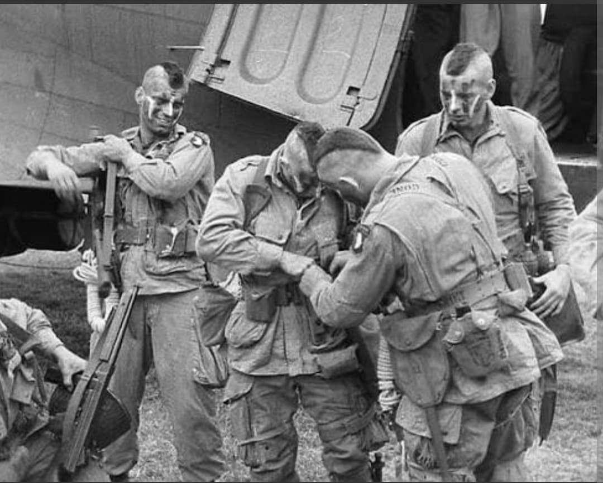
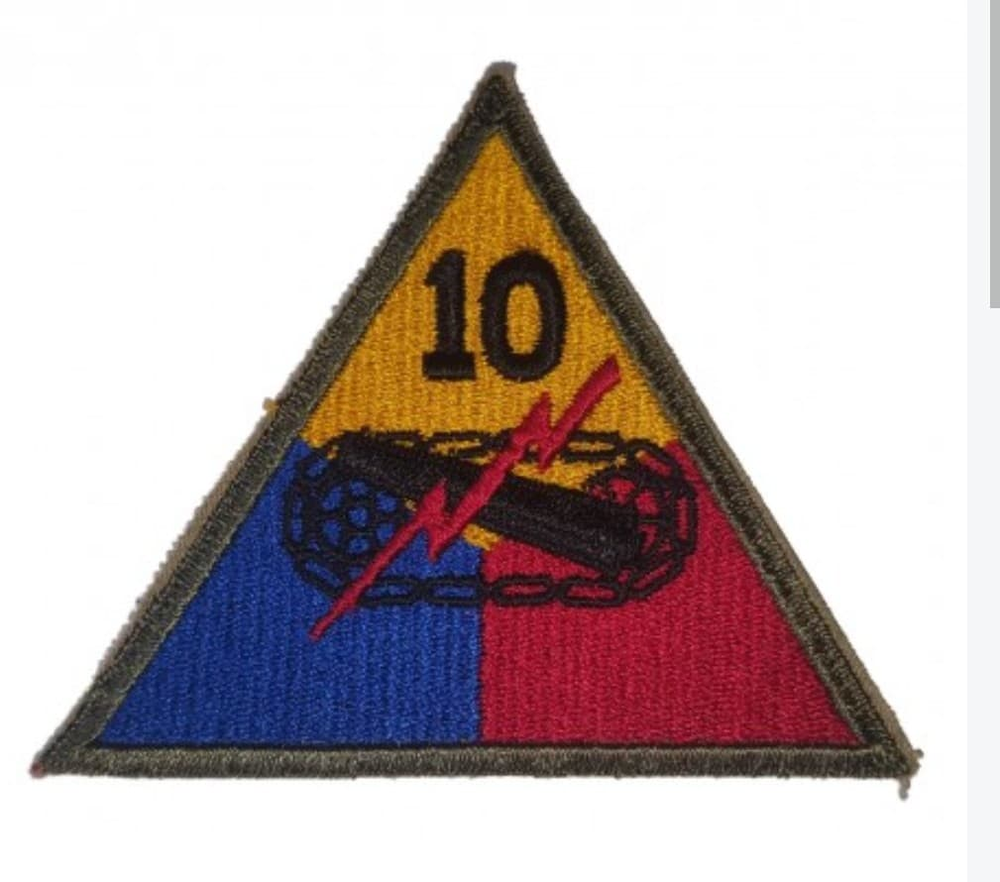
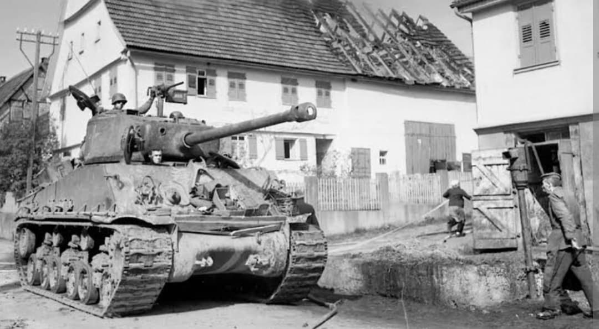

La division des Tigres : des combats acharnés en Moselle au verrouillage héroïque de Bastogne

La 10th Armored Division (10e division blindée américaine), fièrement surnommée la « Tiger Division » (La Division des Tigres), est une unité blindée d'élite qui a joué un rôle décisif sur le front de l'Ouest à partir de l'automne 1944.
Intégrée à la célèbre 3e armée du général George S. Patton, la division s'est distinguée par sa hargne au combat, notamment lors des offensives à travers la Moselle et en contribuant de manière vitale à la défense héroïque de Bastogne durant la bataille des Ardennes.
Activée en juillet 1942 au Fort Benning (Géorgie) sous les ordres du major général **William H. H. Morris Jr.**, la division a fait l'objet d'entraînements intensifs avant d'être déployée sur le théâtre européen en septembre 1944.
Son insigne distinctif met en vedette la silhouette d'un tigre menaçant apposée sur un fond aux couleurs des forces blindées, incarnant la puissance de frappe, l'agilité et la férocité de ses unités sur le champ de bataille.

Débarquée en France à l'automne 1944, la 10th Armored est rapidement engagée dans les rudes combats de l'Est de la France. Elle se bat avec acharnement dans la région de la Moselle et participe à la réduction des défenses allemandes autour de Metz, s'adaptant rapidement aux conditions difficiles et à la météo exécrable.
Ses groupements tactiques (*Combat Commands*) mènent des actions de percée audacieuses, bousculant les lignes adverses et faisant de multiples prisonniers.

Lorsque la Wehrmacht lance son offensive surprise dans les Ardennes à la mi-décembre 1944, des éléments clés de la 10th Armored (en particulier le *Combat Command B*) sont envoyés en toute urgence pour bloquer les axes de progression ennemis menant au nœud routier stratégique de **Bastogne**.
S'intercalant aux côtés des parachutistes de la 101st Airborne, les blindés de la 10th mènent des combats de retardement héroïques à Noville, Longvilly et autour de Bastogne, brisant l'élan des colonnes blindées allemandes avant l'encerclement complet.
Après les sacrifices des Ardennes, la « Tiger Division » reprend l'offensive au début de l'année 1945, franchit le Rhin, participe à la réduction de la poche de la Ruhr et pousse profondément en territoire allemand jusqu'en Bavière et en Autriche, achevant sa mission victorieuse en mai 1945.
Page du Musée HOP WW2 – Section Unités & Divisions